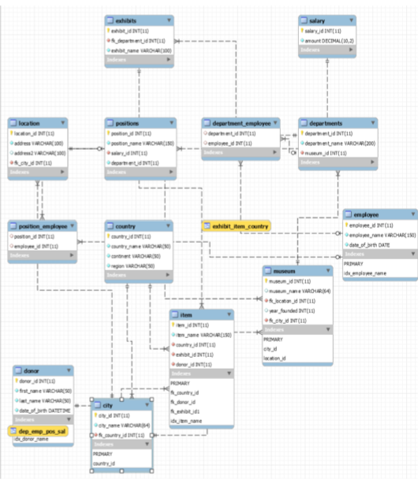

I come from a small town north of Pittsburgh where every road is lined by farms and fields and deer appear around every corner once the sun goes down. I lived there my entire life before attending college in Pittsburgh. It was through my experiences in my local community that I gained an adventurous and outgoing personality.
One large program that shaped much of my life was my involvement in the Boy Scouts of America. It would be a massive understatement to say that I grew a lot from my years ithe BSA. Apart from valuable life skills from tying knots and map orientation, the adventures I was able to have through the programs lead to experiences that can’t be sufficiently explained in words. From canoeing the Minnesota boundary waters, exploring remote Appalachian caverns, or even sailing a Schooner around the Abaco Islands in the Bahamas, I learned the value of being able to sacrifice some of the comforts of home for an experience so many people would ever have the opportunity to have. I was in Boy Scouts from when I was a Tiger Cub at 7 years old, to when I was awarded the rank of Eagle Scout a week before my 18th birthday.
When I was in High School, I was very much involved in different performance arts programs. I Spent all 4 years as an active member of the school marching band eventually becoming a captain and section leader. I also was a productive member of the school’s Theater Arts Program. For the productions I was a part of, I was consistently given large roles and at one point the lead role of a dialogue heavy murder mystery play. My extracurriculars in high school gave me a love for performance and inclination towards showmanship.
When I initially went into my first year of college, I was pursuing a degree in international business. I enrolled in the Business School and for a year and a half pursued that degree with a minor in German. It wasn’t until I took a Visual Basic class my sophomore year that I’d even considered a future with programming. It was that one exposure that got me to rethink my entire career path and look into a future in some form of computer science. By my junior year, I’d settled on a bachelor’s degree in Information Science while still holding my minor in German. Through those two years I gained course-based experience with a wide variety of programming tools from database construction to both dynamic and static web design. While I don’t pretend that my education in any form of programming is complete, I’ve worked and learned enough to be able to painlessly adjust to and make use of whatever problem comes my way. I want to learn while making meaningful contributions to more real-world projects and I look forward to working for a company that will provide me the opportunity to do just that.
Education
I Graduated from Knoch High School in 2017 and started at the University of Pittsburgh the following autumn. I was originally enrolled in the Pitt School of Business as I was pursuing a degree in business, specializing in international business. The semester’s I spent in the business school I took courses covering the principles of business management, marketing, resource organization, and workplace communications.
At this same time I was continuing to build my knowledge of German language and culture from high school. I took German 1-4 as well as a German media course. While I certainly cannot boast fluency, I can say I have gained enough understanding of the German language to be functional if ever thrown into a situation where communication becomes necessary.
I decided to switch tracks towards the end of my sophomore year after taking a programming course in Visual Basic and realizing how much more fulfilling I found programming than any of the material I’d been working with prior to that point. By Junior year I dove straight into the Information Science bachelor’s program. I took courses for programming in Java, Object-Oriented Programming, Network Structure, User-Centered Design, and Database Management. My senior year, now being fully enrolled in the School of Computing and Information. I completed my capstone requirement with an intensive course on Web-Programming. I also completed courses covering Analysis of Information Systems, Interface Designs, and Web Security.
In Spring of 2021 in the midst of the Global Pandemic, I completed my bachelor’s degree and graduated with a Cumulative GPA of 3.264. With the wide range of topics my degree covered, I have a working understanding of many different aspects of programming and web development. I am eager to be given the opportunity to fully refine my understanding of said topics.
Completed Projects Summaries
Menu Manager Java Application
As the final project for my Object Oriented Programming course, I was tasked with creating a Java application that would function as a digital ordering program for a restaurant. This involved creating an intractable interface that the user could use to order from a number of different types of menu items such as entrees, drinks, desserts, etc…
Each of these types of items were created as a separate class with properties for the item name, price, calories and description. The actual information for these items was stored within a separate text file. When these items would be listed within the interface they would be read from the text file using a file reader function and then presented to the user based on the order the user chose to view them in.
The user would select whatever items they wanted to order and the system would calculate the total cost and the total calories for the order. When a user was satisfied with their order they could click a button and their selection would be recorded in a separate text file.
The project requirements also called for a button that would randomly create a menu with 1 of every type of item. There also buttons that would generate menus with the maximum and minimum possible calorie combinations.
My main takeaways from working on this project were a solid understanding in the implementation of public and private classes with their own properties and the usefulness that comes from that level of organization. It also gave me some hands-on experience with manually implementing a graphical user interface. The way information was stored and written to files, I realized afterwards, was notably similar to how it can be much more conveniently stored in rather simple databases. This makes me realize that if I was to do this again I would use a database to store the information and include a store_id attribute to allow for company both or a more complex business model.
While it has been years since I completed this project and it would take a brief refresher to be able to recreate it from scratch, the experience it gave me for structuring and problem solving for larger projects has stuck with me since.
Museum Database
This was the final project for my Database Management Course during my Junior Year at Pitt. Unfortunately most of the files associated with this project were stored on a Pitt cloud server that I lost access to when they changed systems the following year so describing this project comes mostly from memory.
The objective of this project was to work in a team of two peers and create a database at a certain level of complexity based around a topic of our choice. Due to my love for Archeology Adventure movies we ended up doing ours on a fictional museum system.
If I remember correctly, our database contained 11 tables. Those being museum, location, country,city, exhibit, item, donor, position, employee, and salary and department. The information the database would cover would range from museum logistical information, such as which museums have which exhibits and where the museums are located, as well as information about the artifacts themselves.

The finalized ER diagram for our database
I’ll admit I had a bit of fun with populating the tables on this one. I inserted quite a few artifacts directly from the plot of my favorite adventure films (i.e. The Holy Grail was donated by a Dr. Henry Jones Jr.)
Obviously to make the data work together we needed to add junction tables for the varying relationships between tables. Our group was also tasked with setting up a certain number of indexes and views but the specific details on what we selected aren’t anywhere to be found in the files I still have access to and I can’t remember it off hand.
This project was very valuable in giving me a chance to truly understand how to plan and populate a moderately complex database. I remember that there was a decent portion of time when I was taking this course that I struggled to wrap my head around the individual concepts. Doing it all at once from the ground up made it all much easier to comprehend. Experience I gained from this project would help me significantly on my Capstone project the following year.
Go Fly A Kite CSS
This was the final project for my User-Centered Design course during my senior year. The objective was simple. Our professor gave us access to a web page design on Figma, and we were to recreate it using HTML and CSS. The whole point was to improve our ability to make a webpage look stylish.
There isn’t too much to describe for this one as the results are purely visible. This project had nothing to do with making the page functional; it was entirely around the initial presentation on the page.
Screenshot of my completed project click here to see final project web page.
Up to this point I’d struggled with CSS to the point where I considered it an afterthought on my previous projects. This project, however, gave me some much needed hands-on experience with adequate guidance and from that I was able to improve my ability to style web pages exponentially.
The most useful takeaway I’d say I gained from this was flexbox. It made portioning out certain elements on my page so much easier than it had been before. This was also my first experience with setting different viewports based on display size.
The only issue I had with this project was based purely around timing. This was my last assignment for an intense semester. I’d spent the last month working tirelessly on my capstone project and had just finished up a number of other final projects. I was fairly burnt out by the time I reached this project.
Even so I was still able to achieve an A for the project, if I would go back I would definitely change up the display of certain elements. I would specifically redress how I laid out the div containing the contact information at the bottom of the page.
Muster Report Dynamic Web Service Capstone Project
This was by far the largest project I’ve worked on. This project was to build a fully functioning dynamic website that offered two marketable services to the user. This had to connect to a database with at least ten tables. I chose to make a website for people interested in living history, my favorite hobby, to be able to easily find a reenactment group centered around the era they were interested in portraying as well as communicate with said group.
A user was able to create an account and login. They would choose from a list of eras that were pre-entered into the database. These included eras such as the American Civil War, The Great War, WW2, Seven Years War, Napoleonic Wars, and many more. From there if a user was looking for a unit they could choose from a list of all units associated with that era, or they could narrow their options down using filters such as faction/country or unit type such as Infantry, Artillery, or Cavalry. These filter options would vary based on the era selected.
A user could click on a unit and request to join. If a user was looking to create a unit, they would also have that ability. They would choose the era they wish to portray. They would then select the faction, type, choose a name, and then write a brief description for newcomers to see when they visit the page.
The website also featured a number based moderator system. This would mirror levels of military ranks. There were 5 numerical levels that decided what level of control a user had with a particular unit. For example a Sergeant would be at level 3. They would have the ability to to accept join requests but they would not be allowed to discharge. Level 5 would be for anyone in the unit that held an officer’s position. As most reenactor units only have one commanding officer, whether or not the officer holds the rank of captain or colonel made no difference in terms of functionality on the website.
This website also allowed for some discussion and event planning. Anyone of a high enough rank would be able to post an event, and from that anyone in the unit could mark if they were or weren’t going.
All in all I learned a lot from this project. This was a deep dive into practical dynamic programming.between setting up a functional account system with sessions being kept track of, and countless hours of trial and error to correctly manipulate data from the database to display correctly based on the variability of the design, It’s no understatement to say I lost sleep for this one. That being said, I also consider this to be my most satisfying project that I’ve completed. All said and done, I was able to create a fully functioning web service that I believe with a bit time put into its finalization, could be a valuable asset to the community it was intended for.
If I was to go back to this project there are certain things I’d certainly like to change. First of all, I’d add a “My Units” tab to be able to view what groups you are a part of more easily. My biggest change would certainly be a massive upgrade to the CSS. As I said on the project above this one, I worked on this project before I’d gained much of a grapes on CSS as a whole. While my final submission didn’t look terrible, I doubt it would compare well against today’s popular websites.

.png)